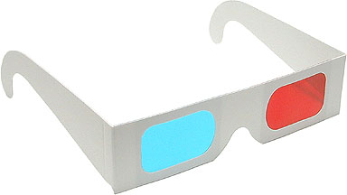
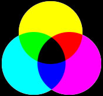
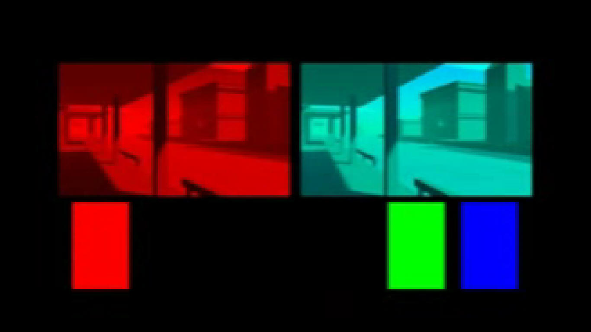
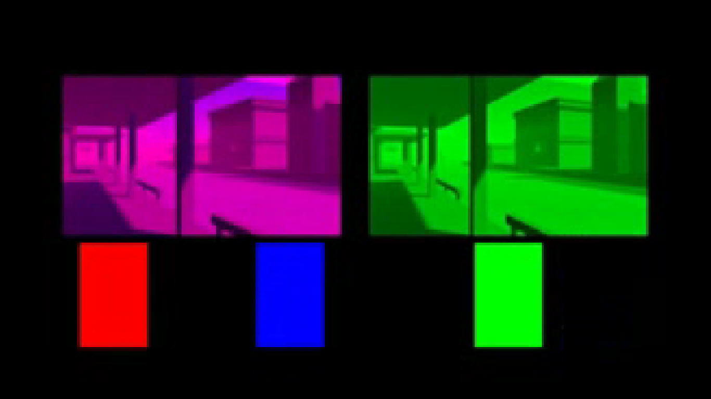
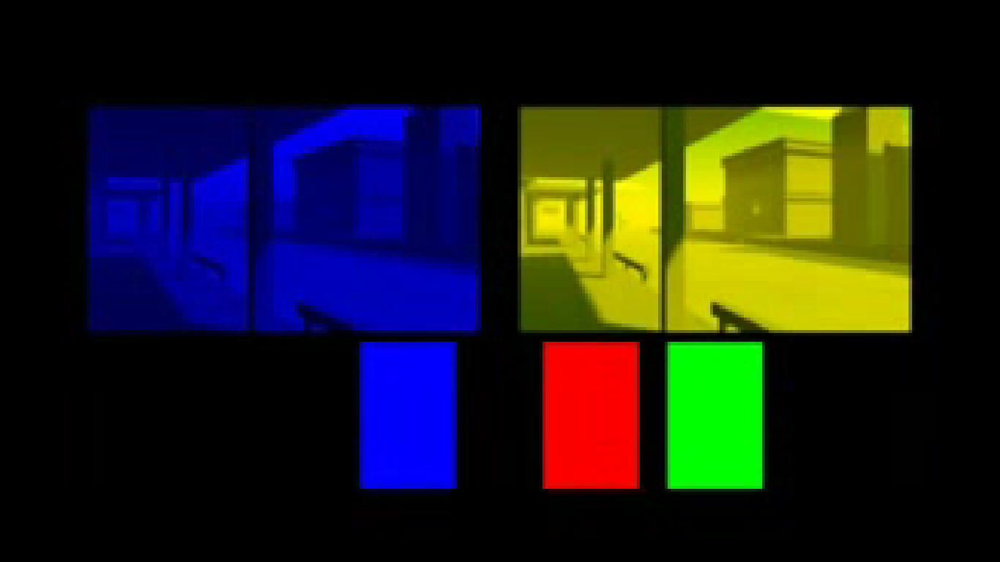
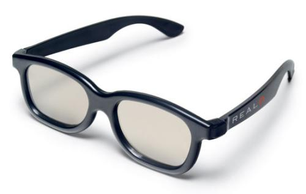
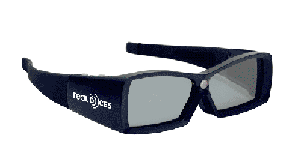
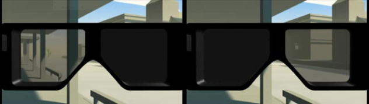
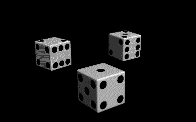

2.1 L'image Anaglyphe
Ce procédé est le plus connu et également le plus simple à expliquer. Il est basé sur le principe de la synthèse soustractive des couleurs. En effet, la somme du rouge, du vert et du bleu permettent de reformer la totalité des couleurs d'une image. Ainsi, le principe est exploité par le cinéma.
L'image perçue par l'œil gauche va donc garder la composante rouge de l'image, et celle de l'œil droit les composantes vert et bleu. Rappelons que le vert et le bleu forment le cyan.
Ceci va alors permettre, lorsque les deux images sont superposées, de ne voir que l'image colorée rouge par l'œil gauche, et l'image colorée cyan par l'œil droit, grâce à des
Puisque le procédé se base sur la complémentarité des couleurs, il est évidemment possible d'utiliser d'autres couleurs, tant qu'au final, les 3 couleurs primaires sont réunies. Cependant, c'est le duo rouge/cyan qui est le plus répandu.
 Cette technique est maintenant très peu utilisée par le cinéma. En effet, il ne permet pas une qualité d'image impressionnante. Cependant il reste très répandu par sa simplicité de création et de visualisation (qui sont plus compliquées pour les autres procédés, comme nous allons pouvoir le voir).
2.2 La Projection Polarisée
Les ondes lumineuses peuvent être
Ce procédé ne permet pas la visualisation sur ordinateur. En effet il fonctionne grâce à
Nous les observons ensuite à travers des
Une
2.3 La Projection Alternée
Comme son nom l'indique, on alterne une image de la caméra gauche avec une image de la caméra droite. Cette alternance est extrêmement rapide. Les salles équipées de ce procédé pouvaient alors voir le film Avatar avec 120 images par seconde, alternées successivement.
Les lunettes associées à la projection alternée ont plusieurs noms :
Elles vont en tout cas être synchronisées sur la cadence d'alternance entre les images, par un signal infrarouge, envoyé par un émetteur qui se situe au-dessus de la cabine de projection. . Leurs verres gauches et droits s'obstruent alternativement et le cerveau est encore une fois bluffé. 
C'est ici le procédé le plus high-tech mais l'un des plus difficiles à mettre au point. La difficulté réside dans la synchronisation entre les lunettes et les images, qui est un problème à ne pas négliger.
